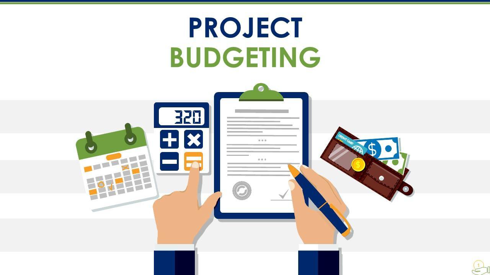

Hi, I'm Manoj Kumar K
Web Developer & BCA Student
I build clean, logical, and structured digital experiences. Passionate about web development, AI, and exploring data mining concepts.
About Me
I am a Bengaluru-based software developer and BCA student specializing in full-stack web technologies. My academic and personal projects focus on creating structured, scalable, and data-driven web applications. Beyond standard web development, my technical interests intersect with Data Mining and Artificial Intelligence,
where I use Python to explore how data can be leveraged to create smarter user experiences. I thrive in environments that require heavy logical thinking, continuous learning, and clean code architecture.
Skills
Education
Bachelor of Computer Applications (BCA)
Status: Currently in 6th Semester
Location: Bengaluru
Focusing heavily on software development, web technologies, and core computer science fundamentals to build a strong programming foundation.
Pre-University (PCMB)
Institution: B.E.S. PU College
Graduated: 70%
Built a strong, logical foundation in science and mathematics before transitioning my focus into software engineering and computer applications.
Featured Projects
MunchMate
MunchMate is a comprehensive digital Canteen Management System engineered to optimize cafeteria operations by replacing manual tracking with a streamlined digital ordering process. Featuring robust database management, real-time inventory tracking, and a frictionless user interface, it drastically reduces wait times, eliminates order processing errors, and prevents stock-outs during peak hours.

PocketBudget
PocketBudget is a dynamic personal finance utility application designed to empower users to take control of their daily expenditures. It removes the friction of manually tracking minor expenses by featuring an intuitive interface for rapid data entry and automatic spending categorization, providing users with clear, logical summaries of their budget health and long-term spending patterns.